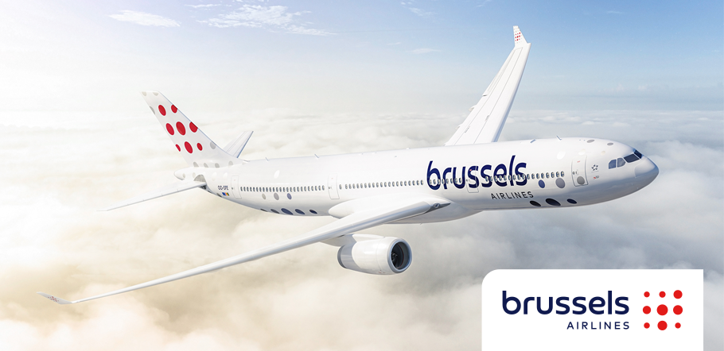
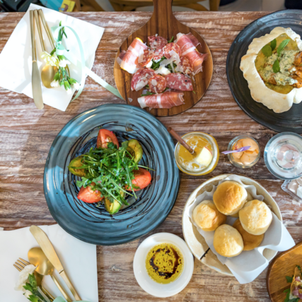
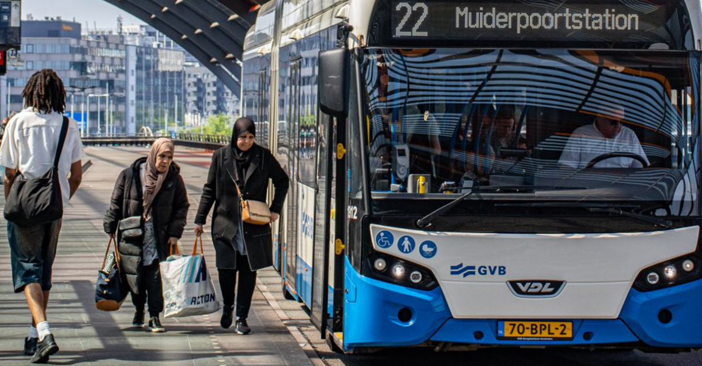
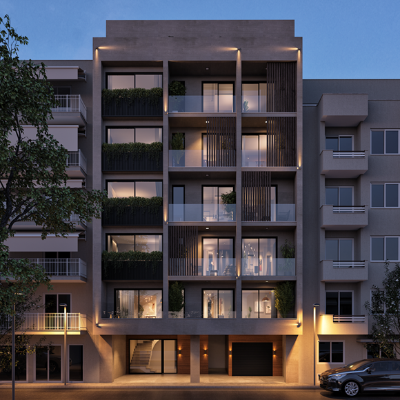

Iedereen moet eens naar Athene
Door een bezoek aan Athene te brengen, kun je de indrukwekkende geschiedenis leren kennen. Het is een plek met vele monumenten zoals de Akropolis en het Parthenon. Een bezoek aan Athene is echt een must voor wie houdt van geschiedenis en cultuur. Naast de historische bezienswaardigheden biedt athene ook een geweldige culinaire ervaring. Ze staan bekend om de versheid en smaak in hun eten.
Een duurzaam avontuur in Athene
Mijn reis naar Athene is duurzaam doordat ik bewust heb gekozen voor een milieuvriendelijkere manier van verplaatsen en verblijf. Ik reis wel met het vliegtuig naar Athene want het is voor een lange periode/afstand, het probleem is dat veel mensen voor korte perioden/afstanden het vliegtuig nemen en dat moet stoppen. In plaats van de auto te nemen in Athene stad, maak ik gebruik van het openbaar vervoer zoals de metro en bussen. Door lokale producten te kopen en stad te voet of met de fiets verkennen, draag ik niet alleen bij aan het beschermen van het milieu, maar steun ik ook de lokale economie.
De planning van maandag
| Activiteit | Beginuur | Einduur | |
|---|---|---|---|
|  | Nachtvlucht van Brussel → Athene | 07:00 | 11:00 |
|  | Brunchen in Athene stad | 13:00 | 14:00 |
|  | Van Athene stad → accomodatie met het openbaar vervoer | 15:00 | 16:30 |
|  | Karaoke in de accomodatie | 17:00 | 19:00 |
| Pizza's eten in de accomodatie | 19:30 | 20:30 | |
| Netflix en chill in de accomodatie | 21:00 | 23:00 |
Paklijst
- Kleding
- Wandelschoenen
- Pet
- Broeken
- T-shirts
- Extra benodigdheden
- Zonnecrème
- Hervulbare waterfles
- Rugzak